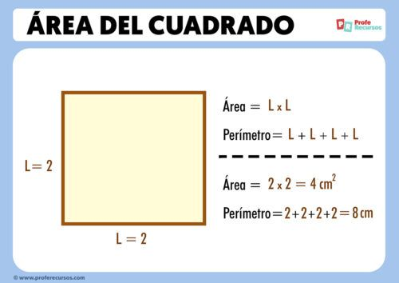

Un cuadrado es una figura geométrica plana compuesta por todos los puntos en un plano que se encuentran a una distancia constante (radio) de un punto central llamado el centro. Los cuadrados son fundamentales en la geometría y tienen una variedad de aplicaciones en la vida cotidiana, como ruedas, relojes, y muchos dispositivos tecnológicos.
Algunas propiedades importantes del cuadrado son:
Los parámetros de un cuadrado son el centro, el radio, el diámetro, la circunferencia, la cuerda, la secante, la tangente y el arco.
Centro -> El punto fijo dentro del cuadrado, desde el cual todos los puntos de la circunferencia equidistan
Área: A = πr²
Diámetro: D = 2r
Ejemplos
Estas son algunas de las fórmulas matemáticas más utilizadas en relación con los cuadrados:
Circunferencia: C = 2πr
Área: A = πr²
Diámetro: D = 2r